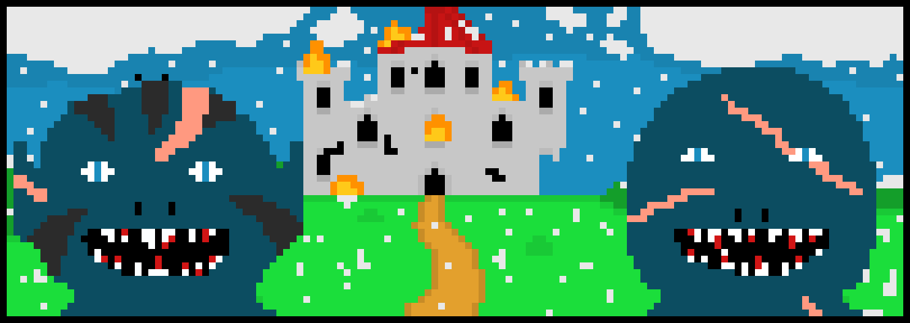
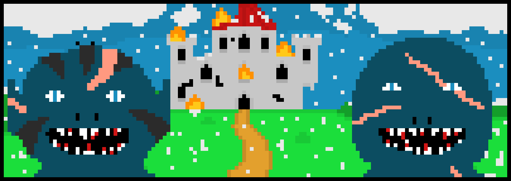
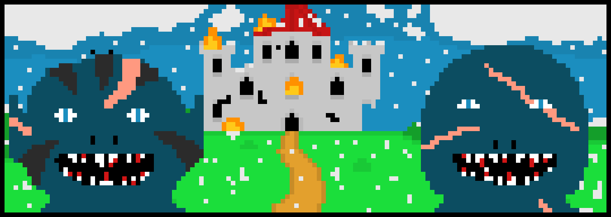
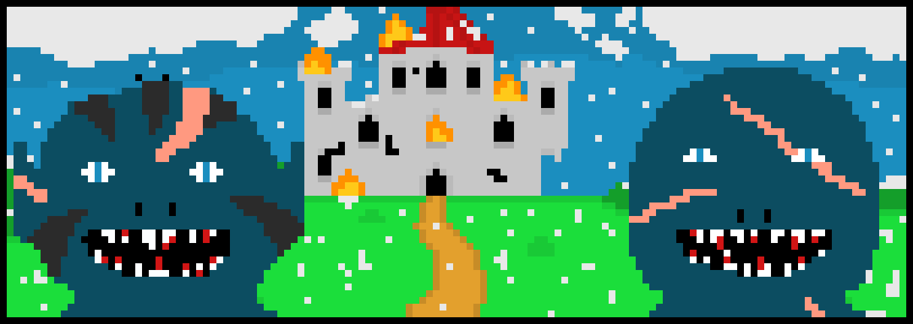

Tout commença il y a plus de 700 ans, tout était paisible, le royaume était prospère jusqu'au jour ou un tremblement se fit ressentir à travers le royaume.
C'est alors qu'un vent glaciale arriva et quelques jours plus tard l'hiver apparu et s'installa sur tout le royaume. Cependant, l'hiver ne vint pas seul, avec lui d'innombrable monstres arrivèrent.
Une grande guerre commence alors.
Après des années de guerre et d'incalculable morts les monstres furent enfin repoussé. Mais l'hiver quant à lui resta et même de nos jours l'hiver perdure encore. Mais l'histoire ne s'arrête pas là. Il y a peu, un tremblement se fit ressentir et avec lui un vent plus glacial que les autres arriva.
Mais aujourd'hui, trop peu de gens se souviennent de ce qui vient avec l'hiver glacial.


 


